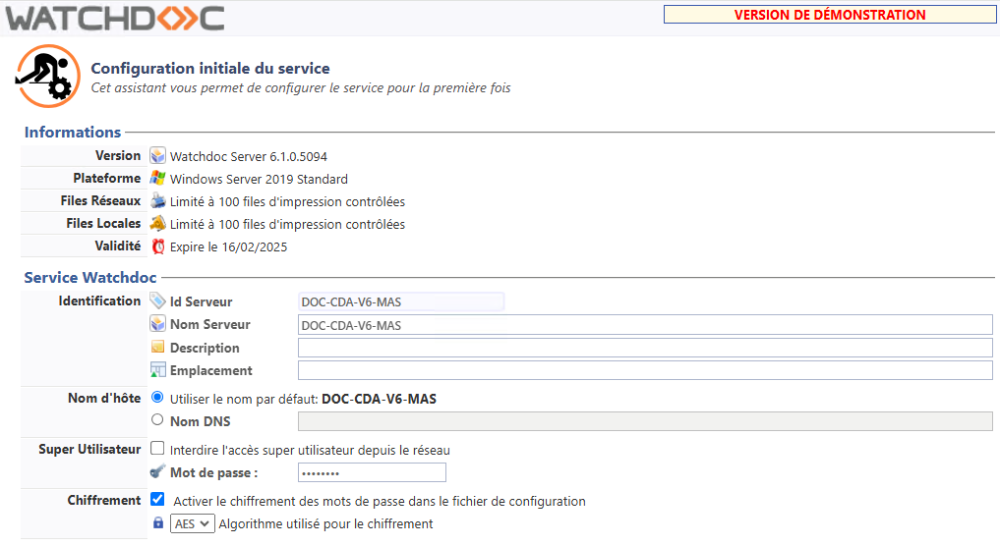
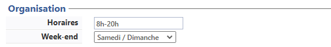
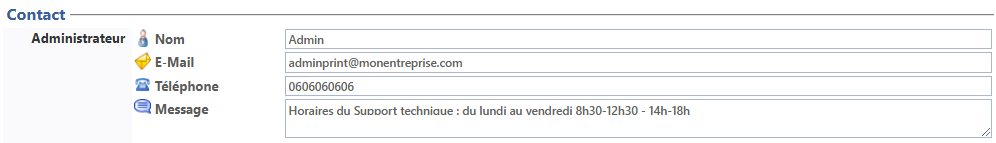
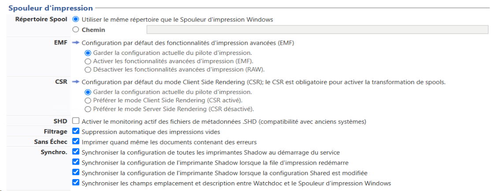

Accéder à l'interface de configuration
Pour accéder à l'interface de configuration, depuis le Menu principal, section Configuration, cliquez sur Configuration avancée > Configuration initiale du service :

Service Watchdoc > Identification
-
Id Serveur : indiquez l'adresse DNS ou l'adresse IP du serveur hébergeant le kernel
 En anglais, Kernel signifie "noyau". Dans nos documents, il désigne le service de Watchdoc chargé de la gestion des impressions hors Site web. Watchdoc ;
En anglais, Kernel signifie "noyau". Dans nos documents, il désigne le service de Watchdoc chargé de la gestion des impressions hors Site web. Watchdoc ; -
Nom Serveur : indiquez le nom (en langage naturel) explicite du serveur. Ce nom étant affiché dans les différentes interfaces ainsi que dans les rapports statistiques, il doit être précis. Par exemple : "Impression site de Lille 2e étage" ; "Serveur Impression Bâtiment B" ; "Serveur d'impression du pôle commercial de Paris".
-
Description : si nécessaire, complétez le nom à l'aide d'une description du serveur.
-
Emplacement : si nécessaire, fournissez une information relative à la localisation géographique du serveur. Cette information peut être utile en cas d'intervention physique sur le serveur. Par exemple : "Hébergée dans la salle serveurs 2 - 3e étage".
-
Sous-section Service Watchdoc > DNS Serveur. Cliquez sur l'un des boutons radio pour définir le nom attribué au serveur. Ce nom sera utilisé dans le chemin d'accès vers le site web d'administration ou au site web d'utilisation :
-
Nom par défaut : c'est le nom défini dans la section précédente qui sera attribué au serveur Watchdoc.
Par défaut, Watchdoc utilise le nom NetBios du serveur, mais dans le cas où certains postes (connectés au serveur) ne peuvent pas résoudre correctement les noms, il est conseillé de spécifier un nom DNS complet, comme, par exemple, "serveur.domain.com" ou l'adresse IP (ex: 192.168.x.y). -
Nom DNS
Le Domain Name System (ou DNS, système de noms de domaine) est un service permettant de traduire un nom de domaine en informations de plusieurs types qui y sont associées, notamment en adresses IP de la machine portant ce nom. : si le nom de serveur est susceptible de changer, saisissez le nom DNS attribué au serveur d'impression. Ce nom est utilisé dans les courriels éventuellement envoyés aux utilisateurs du service.
Dans une installation de type cluster Techniques permettant le regroupement d'ordinateurs indépendants (appelés "noeuds") afin de permettre un gestion globale et de dépasser les limitations d'un ordinateur pour en augmenter la disponibilité, faciliter la montée en charge et répartir les charges ou faciliter la gestion des ressources, notamment., il faut préciser le nom du serveur cluster d'impression, et non le nom de l'un des nœuds physiques.
-
Service Watchdoc > Super Utilisateur
-
Le Super Utilisateur est un administrateur disposant du droit d'accéder à l'interface d'administration en mode maintenance et habilité, de ce fait, à modifier toute la configuration de Watchdoc.
Dans cette section :
-
Interdire l'accès super utilisateur depuis le réseau : cochez la case si vous souhaitez, par mesure de précaution, réserver l'accès au site d'administration depuis le serveur d'impression exclusivement, c'est-à-dire à partir de l'url "http://localhost/Watchdoc/admin/".
-
Mot de passe : il s'agit du mot de passe permettant d'accéder à l'interface d'administration en tant que Super Utilisateur. Le mot de passe pris en compte par défaut est celui qui a été défini lors de l'installation de Watchdoc. Si vous souhaitez le modifier, saisissez un nouveau mot de passe dans cette zone.
-
Service Watchdoc > Obfuscation
La fonction d'obfuscation ou "brouillage de code". Opération qui consiste à rendre une section de code ou un programme illisible pour tout humain tout en gardant ce code ou ce programme pleinement fonctionnel.
On a recours au brouillage, notamment, pour contrer la pratique de l'ingénierie inverse chez les concurrents, en rendant un logiciel résistant à l'observation et à l'analyse lors d'une éventuelle décompilation. permet d'obfusquer les mots de passe figurant dans le fichier de configuration de la solution Watchdoc (config.xml). Cette option offre donc une sécurisation de l'outil en rendant illisibles les mots de passe d'administration.
ou "brouillage de code". Opération qui consiste à rendre une section de code ou un programme illisible pour tout humain tout en gardant ce code ou ce programme pleinement fonctionnel.
On a recours au brouillage, notamment, pour contrer la pratique de l'ingénierie inverse chez les concurrents, en rendant un logiciel résistant à l'observation et à l'analyse lors d'une éventuelle décompilation. permet d'obfusquer les mots de passe figurant dans le fichier de configuration de la solution Watchdoc (config.xml). Cette option offre donc une sécurisation de l'outil en rendant illisibles les mots de passe d'administration.
-
Activer l'obfuscation : cochez la case si vous souhaitez, par mesure de précaution, chiffrer les mots de passe du fichier de configuration à l'aide de l'algorithme AES
Réseau d'Initiative Publique. Réseau fondé sur des infrastructures privées et publiques. 258 bits (par défaut).
Configurer la section Organisation

Dans cette section, définissez les horaires et jours durant lesquels le service Watchdoc fonctionne :
-
Horaires : saisissez les horaires d'activité de l'organisme qui utilise Watchdoc. Par exemple, "8h30-18h30". Si le service ne s'interrompt jamais, saisissez "0-24". Ce critère est utilisé à des fins purement indicatives, dans le filtre "Pendant les heures d'ouverture" et dans les rapports d'activité.
-
Week-end : dans la liste, choisissez les jours durant lesques l'organisme qui utlise Watchdoc ne travaille pas. Sélectionnez le choix Pas de jour de repos si l'organisme ne ferme pas. Ce critère est utilisé à des fins purement indicatives, dans le filtre "Pendant les heures d'ouverture" et dans les rapports d'activité.
Configurer la section Contact

Dans cette section, indiquez les coordonnées du référent Watchdoc qu'il convient de solliciter en cas de problème lors de l'impression. Ces informations apparaissent dans les courriels ou notifications envoyés aux administrateurs et aux utilisateurs :
-
Nom : saisissez le nom du référent ;
-
E-Mail : saisissez l'adresse courriel du référent ;
-
Téléphone : saisissez le numéro de téléphone du référent ;
-
Message : saisissez des informations complémentaires susceptibles d'aider les utilisateurs (horaires du support ou l'adresse d'un site sur lequel les utilisateurs pourront trouver une documentation utilisateur du service Watchdoc, par exemple).
Les informations de la section Contact sont envoyées par courriel aux utilisateurs en cas de problème et si les notifications sont activées et correctement configurées.
Configurer la section Spouleur d'impression
Dans cette section, indiquez les paramètres qui permettent à l'interface admnistrateur de communiquer avec le kernel Watchdoc.

Sous-section Serveur d'impression
Dans cette sous-section, indiquez le mode de fonctionnement du serveur :
-
Se connecter au serveur local : choisissez ce bouton si Watchdoc est installé en mode autonome (cf. article Prérequis d'installation et de configuration) ; si Watchdoc est installé en mode déporté ou Cluster
Techniques permettant le regroupement d'ordinateurs indépendants (appelés "noeuds") afin de permettre un gestion globale et de dépasser les limitations d'un ordinateur pour en augmenter la disponibilité, faciliter la montée en charge et répartir les charges ou faciliter la gestion des ressources, notamment., décochez la case et indiquez le nom DNS du serveur d'impression. -
Nom DNS :si Wachtdoc est installé en mode déporté ou en cluster, saisissez le nom DNS du serveur d'impression sur lequel est installé le kernel de Watchdoc (cf. article Prérequis d'installation et de configuration).
Sous-section Répertoire Spool.
Dans cette section, indiquez le dossier dans lequel sont enregistrés les spools File d'attente avant envoi au périphérique. A l'origine, le mot 'spool' est l'acronyme de 'simultaneous processing operations on line'.
Le spool d'impression désigne le fichier d'édition envoyé au périphérique d'impression. Il regroupe l'ensemble des ordres que l'imprimante doit exécuter pour mener à bien l'impression d'un ou plusieurs documents. :
File d'attente avant envoi au périphérique. A l'origine, le mot 'spool' est l'acronyme de 'simultaneous processing operations on line'.
Le spool d'impression désigne le fichier d'édition envoyé au périphérique d'impression. Il regroupe l'ensemble des ordres que l'imprimante doit exécuter pour mener à bien l'impression d'un ou plusieurs documents. :
-
Utiliser le répertoire de spool par défaut : choisissez ce bouton pour laisser Watchdoc détecter automatiquement l'endroit où sont enregistrés les fichiers de spools (portant l'extension .shd et .spl) ;
-
Chemin : optez pour ce choix si vous ne souhaitez pas utiliser le dossier par défaut, et indiquez le chemin d'accès au dossier où sont enregistrés les fichiers de spools.
Par défaut, les fichiers de spools sont enregistrés dans C:\Windows\System32\spool\PRINTERS
En mode cluster Techniques permettant le regroupement d'ordinateurs indépendants (appelés "noeuds") afin de permettre un gestion globale et de dépasser les limitations d'un ordinateur pour en augmenter la disponibilité, faciliter la montée en charge et répartir les charges ou faciliter la gestion des ressources, notamment., il est obligatoire d'indiquer le chemin du répertoire spooler partagé du cluster.
Techniques permettant le regroupement d'ordinateurs indépendants (appelés "noeuds") afin de permettre un gestion globale et de dépasser les limitations d'un ordinateur pour en augmenter la disponibilité, faciliter la montée en charge et répartir les charges ou faciliter la gestion des ressources, notamment., il est obligatoire d'indiquer le chemin du répertoire spooler partagé du cluster.
Sous-section EMF.
Dans cette section, vous pouvez activer ou désactiver les fonctionnalités d'impression avancées (EMF Enhanced Metafile (ou EMF) est un format d'image numérique pour les systèmes Microsoft Windows et certains pilotes d'impression. Il s'agit d'une amélioration du type de fichier image de type WMF (Windows Metafile) avec des données codées sur 32 bits pour une meilleure qualité.) de MS Windows®.
Enhanced Metafile (ou EMF) est un format d'image numérique pour les systèmes Microsoft Windows et certains pilotes d'impression. Il s'agit d'une amélioration du type de fichier image de type WMF (Windows Metafile) avec des données codées sur 32 bits pour une meilleure qualité.) de MS Windows®.
En configuration initiale, nous vous recommandons de conserver le paramétrage par défaut. Pour plus d'information, consultez la documentation de la configuration avancée.
Sous-section CSR Client Side Rendering. Dans une infrastructure Client/serveur, le Client-side rendering est la prise en charge du spool par le poste client et non par le serveur. Le poste client envoie donc au serveur un fichier de spool finalisé..
Activez ou désactivez le mode Client Side Rendring (CSR).
En configuration initiale, nous vous recommandons de conserver le paramétrage par défaut.
Sous-section Filtrage.
Suppression automatique des impressions vides : cochez la case pour permettre à Watchdoc® de supprimer automatiquement les travaux d'impression ne contenant pas de données.
Certains pilotes d'impression envoient systématiquement un document vide appelé "Document local bas niveau" avant chaque impression. La fonction de filtrage proposée par Watchdoc permet de détecter et de supprimer automatiquement ces travaux d'impression parasites.
Sous-section Sans Echec
-
Imprimer quand même les documents contenant des erreurs : la case, cochée par défaut, permet à Watchdoc® d'imprimer tous les travaux d'impression, même dans le cas où les fichiers de spools présentent des erreurs empêchant l'interprétation des métadonnées.
Afin d'éviter le blocage d'un certain nombre d'impressions, il est conseillé de conserver cette case cochée par défaut.
Sous-section Synchro
Conservez les cases cochées par défaut :
-
Synchroniser les imprimantes shadow au démarrage du service
-
Synchroniser l'imprimange Shadow lors que la fil d'impression démarre
-
Synchroniser l'imprimante Shadow lorsque la configuration shared est modifiée
-
Synchroniser les champs Emplacement et Description entre Watchdoc et le Spooler Windows.
-
Cliquez sur Suivant pour poursuivre la configuration.